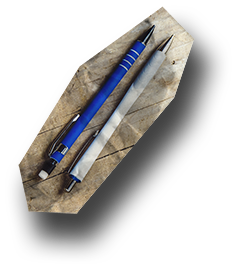
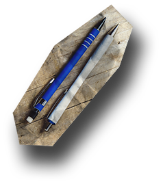

Olá, estudante do Sesc EAD EJA! Seja bem-vindo à área de Qualificação Profissional de Produtor Cultural. Confira o que você aprenderá neste módulo.
Este quinto e último módulo será inteiramente dedicado ao mundo do trabalho da Produção Cultural, com participações de convidados especiais em ótimas conversas para entendermos melhor por onde começar a sua trajetória profissional e quais os caminhos que se abrem à sua frente como produtor cultural.
Não deixe de passar no fórum para ver e compartilhar suas impressões com os colegas e professores! Siga conosco nesta caminhada!
Até a próxima! 
